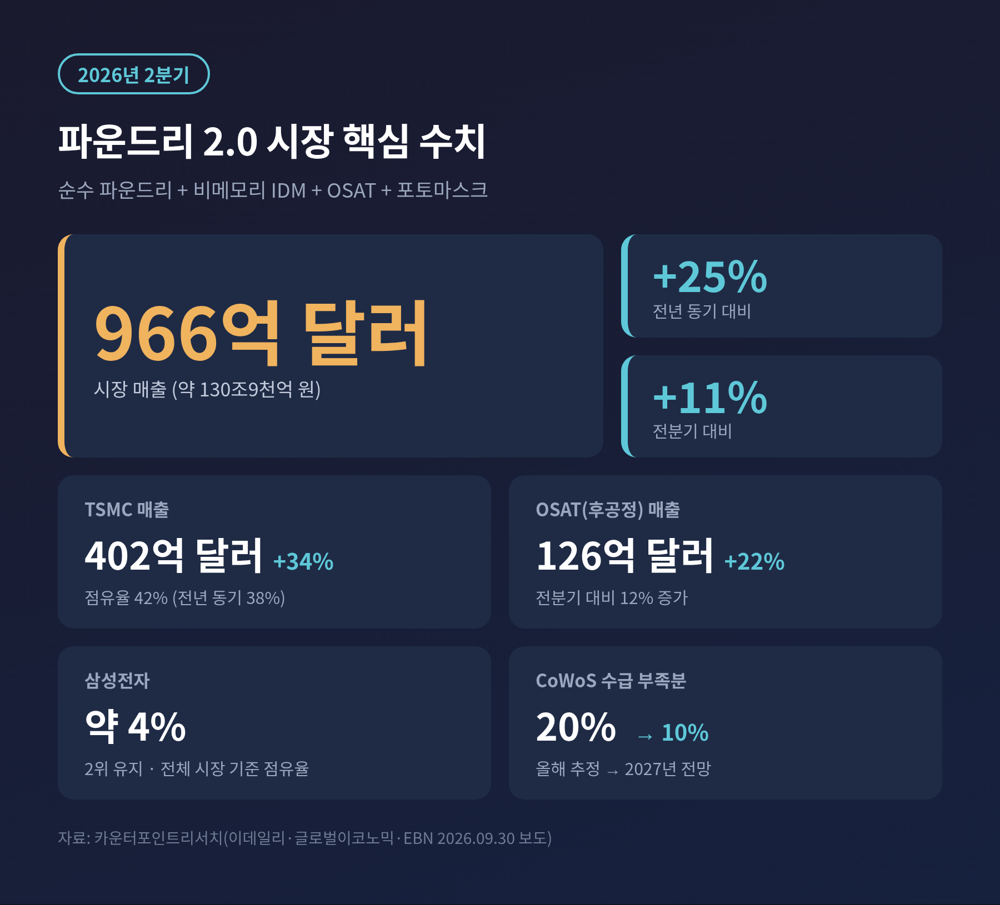
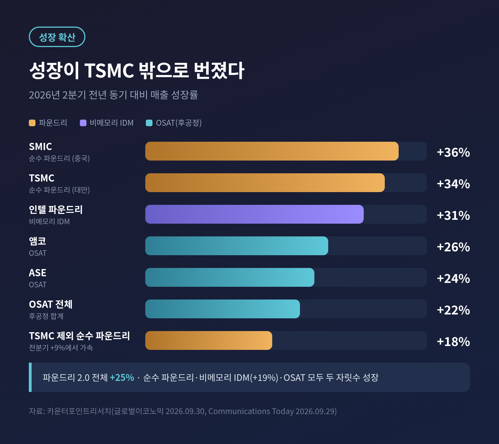
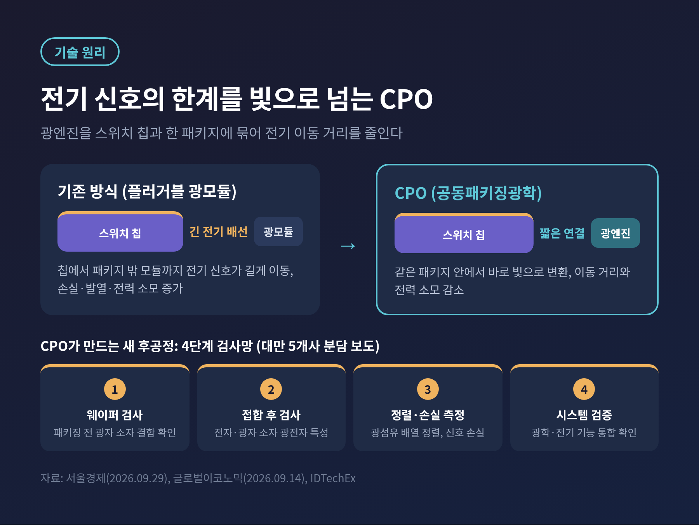
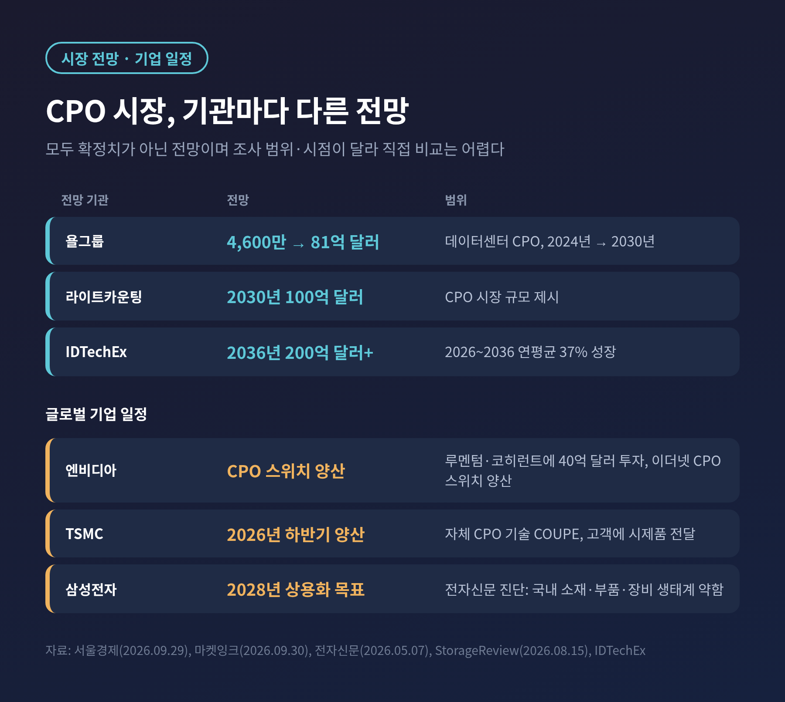
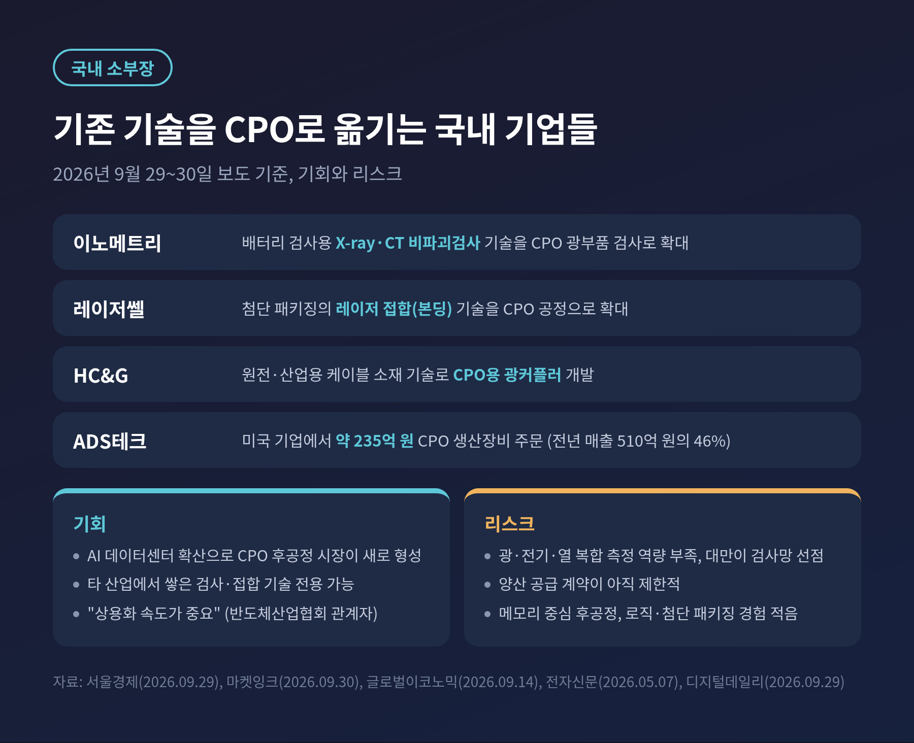

파운드리 2.0 2분기 25% 성장, AI 수요가 패키징·CPO로 번졌다

오늘은 반도체 후공정 수요가 왜 커지는지, 최근 발표된 시장 수치로 정리해 보려 합니다.
카운터포인트리서치가 9월 30일 2분기 '파운드리 2.0' 시장 매출이 966억 달러로 전년보다 25% 늘었다고 밝혔습니다.
무슨 일인지, 왜 후공정이 중요해졌는지, 국내 소부장에는 어떤 기회와 숙제가 있는지 차례로 살펴봅니다.
3줄 요약
2분기 파운드리 2.0 시장은 966억 달러(약 130조 원)로 전년 동기 대비 25%, 전분기 대비 11% 성장했습니다. 후공정(OSAT) 매출도 126억 달러로 22% 늘었습니다.
AI 칩 성능을 가르는 병목이 회로 미세화에서 첨단 패키징과 테스트로 옮겨가고 있고, 그 끝에서 빛으로 데이터를 옮기는 CPO(공동패키징광학)가 새 후공정 시장으로 부상하고 있습니다.
국내 소부장 기업의 CPO 진출이 잇따르지만, 계약 규모와 광·전기·열 복합 검사 역량 면에서는 숙제가 남아 있습니다.
무슨 일이 있었나 — 966억 달러, 25% 성장
카운터포인트리서치는 2026년 2분기 글로벌 파운드리 2.0 시장 매출을 966억 달러로 집계했습니다.
전년 동기보다 25%, 전분기보다 11% 늘어난 규모입니다.
원화로는 약 130조 9천억 원입니다.
'파운드리 2.0'이라는 말이 낯설 수 있습니다.
칩을 위탁 생산하는 순수 파운드리만 보던 예전 틀을 넓혀, 비메모리 IDM과 후공정 업체(OSAT), 포토마스크까지 함께 묶어 보는 개념입니다.
웨이퍼에 회로를 새기는 일뿐 아니라 칩을 붙이고 시험하는 일까지 한 덩어리의 사업으로 본다는 뜻입니다.
카운터포인트는 이 대목을 이렇게 표현했습니다.
"제조, 패키징, 테스트를 통합한 파운드리 2.0 모델은 이제 개념이 아니라 현실이 됐다."
TSMC의 성적표부터 보면 매출은 402억 달러로 34% 늘었습니다.
시장 점유율은 지난해 같은 분기 38%에서 약 42%로 올랐습니다.
삼성전자는 점유율 약 4%로 2위 자리를 지켰습니다. 다만 이 점유율은 후공정과 비메모리 IDM까지 포함한 전체 시장 기준이라, 순수 파운드리 점유율과는 다르다는 점에 유의하셔야 합니다.

성장이 TSMC 밖으로 번졌다
이번 발표에서 눈여겨볼 대목은 성장의 폭입니다.
예전엔 AI 수요가 TSMC 한 곳에 몰린다는 이야기가 대부분이었습니다. 지금은 성장이 밸류체인 곳곳으로 번지는 모양새입니다.
TSMC를 뺀 순수 파운드리 매출은 전년 동기 대비 18% 늘었습니다. 전분기 9%에서 두 배 가까이 속도가 붙었습니다.
중국 SMIC는 36%, 넥스칩은 21%, 뱅가드는 20%, UMC는 9% 성장했습니다.
후공정 업체 중에서는 앰코가 26%, ASE가 24% 늘었습니다.
비메모리 IDM도 전체로 19% 성장했고, 인텔 파운드리가 31%로 가장 높았습니다.
카운터포인트는 "AI 수요는 더 이상 단일 제품의 이야기가 아니다"라고 짚었습니다.
GPU뿐 아니라 맞춤형 ASIC, 서버 CPU, 네트워킹 칩, 전력 반도체가 생산 능력을 놓고 함께 경쟁하면서, 성장이 성숙 공정 파운드리와 IDM, OSAT로 넓어졌다는 설명입니다.
삼성 파운드리도 수혜를 입고 있습니다.
윌리엄 리 카운터포인트 책임연구원은 고객사들이 추가 공급원을 찾으면서 삼성과 인텔 파운드리도 혜택을 보고 있다고 분석했습니다.
다만 삼성은 첨단 공정 규모와 패키징 캐파에서 TSMC에 큰 격차로 뒤처져 있다는 지적이 함께 나옵니다.

왜 후공정이 병목이 되었나
후공정은 오랫동안 조용한 영역이었습니다.
완성된 칩을 보호하고 전기적으로 연결하는 마무리 단계 정도로 여겨졌기 때문입니다.
지금은 다릅니다.
AI 가속기는 GPU와 HBM 같은 여러 칩을 한 패키지에 촘촘히 얹어야 성능이 나옵니다. 회로를 아무리 미세하게 그려도, 칩을 잇는 패키징이 따라주지 못하면 완제품이 나오지 않습니다.
카운터포인트가 "첨단 패키징이 여전히 주요 제약 요인"이라고 말한 이유입니다.
수급 전망도 이를 뒷받침합니다.
TSMC의 첨단 패키징 CoWoS는 올해 수요 대비 공급 부족분이 약 20%로 추정됩니다. 내년에는 이 격차가 10% 수준으로 줄어들 것이라는 전망입니다.
줄어든다는 것이지, 사라진다는 뜻은 아닙니다.
장기 전망은 더 큽니다.
카운터포인트는 향후 5년간 첨단 패키징 방식으로 출하되는 GPU와 AI ASIC이 1억 3천만 개를 넘고, 여기서 나오는 AI 컴퓨트 매출 기회가 약 2조 달러에 이를 것으로 내다봤습니다.
하반기에도 파운드리 2.0 시장은 두 자릿수 성장이 이어질 것이라는 게 이 기관의 시각입니다.
전기 신호의 한계, 그리고 CPO
이 흐름의 끝자락에 놓인 기술이 CPO입니다.
AI 데이터센터가 커질수록 서버와 스위치 사이에서 오가는 데이터가 폭증합니다. 구리선을 타고 흐르는 전기 신호는 거리가 길어질수록 손실과 발열, 전력 소모가 커지는 한계가 있습니다.
CPO는 광엔진과 스위치 반도체를 하나의 패키지 안에 통합하는 방식입니다.
칩 바로 옆에서 전기를 빛으로 바꿔 보내므로, 전기 신호가 이동하는 거리가 짧아집니다. 기존에는 스위치 밖에 꽂는 광모듈(플러거블 트랜시버)이 그 역할을 했습니다.
엔비디아가 밝힌 수치를 보면 방향이 보입니다.
2025년 3월 발표 당시 전력 효율 3.5배, 네트워크 복원력 10배, 레이저 4배 절감을 내세웠습니다. 이후 보도에서는 이더넷용 CPO 스위치가 양산에 들어갔고 전력 효율은 5배로 소개됐습니다. 두 수치가 다른 만큼, 제조사가 제시한 값이라는 점을 감안해 읽으시길 권합니다.
CPO는 후공정 측면에서 새로운 일감을 만듭니다.
광소자와 전자 소자를 접합하고, 광섬유를 정렬하고, 빛의 손실을 재는 공정이 새로 생기기 때문입니다.
대만에서는 5개 검사·장비 업체가 CPO 검사를 4단계로 나눠 맡는 체제를 갖췄다는 보도가 나왔습니다. 패키징 전 광자 소자 웨이퍼 검사, 접합 후 광전자 검사, 광섬유 정렬과 신호 손실 측정, 최종 시스템 통합 검증의 순서입니다.

글로벌 기업 움직임과 시장 전망
글로벌 기업들은 이미 움직이고 있습니다.
엔비디아는 광통신 부품 업체 루멘텀과 코히런트에 40억 달러를 투자하고 스타트업 아야랩스와 협력하는 것으로 전해졌습니다. TSMC는 자체 CPO 기술 COUPE의 양산을 올해 하반기로 잡고 있습니다. 삼성전자의 상용화 목표는 2028년입니다.
시장 규모 전망은 기관마다 다릅니다.
욜그룹은 데이터센터용 CPO 시장이 2024년 4,600만 달러에서 2030년 81억 달러로 커진다고 봤습니다. 라이트카운팅은 2030년 100억 달러를 제시했습니다. IDTechEx는 2036년 200억 달러 초과, 2026~2036년 연평균 37% 성장을 전망합니다.
조사 범위와 시점이 서로 달라 직접 비교하기는 어렵습니다. 모두 확정치가 아닌 전망이라는 점도 기억하셔야 합니다.

국내 소부장의 기회와 리스크
국내에서는 9월 29~30일 사이 CPO 후공정 진출 소식이 잇따라 나왔습니다.
이노메트리는 배터리 검사에 쓰던 X-ray·CT 비파괴검사 기술을 CPO 광부품 검사로 넓히고 있습니다. 레이저쎌은 첨단 패키징에 쓰이던 레이저 접합 기술을 CPO 공정으로 확대하는 중입니다. HC&G는 원전·산업용 케이블 소재 기술로 광커플러를 개발하고 있습니다.
ADS테크는 지난 8월 미국 기업에서 약 235억 원(약 1,645만 달러) 규모 CPO 생산장비 주문을 받았습니다. 지난해 연매출 510억 원의 46%에 해당하는 금액입니다.
이 사례들은 다른 산업에서 쌓은 기술을 옮겨 새 시장에 들어간다는 공통점이 있습니다.
반도체산업협회 관계자도 상용화 속도가 중요하며, 관련 기술을 가진 기업이 기존 역량으로 진출할 수 있다고 말했습니다.
반면 리스크도 분명합니다.
첫째, 검사 역량의 결이 다릅니다. 국내 검사장비는 전기 신호 측정 중심이라 광·전기·열을 함께 재야 하는 CPO에서는 진입 장벽이 높다는 지적이 있습니다. 대만 업체들이 4단계 검사망을 먼저 짰다는 점도 부담입니다.
둘째, 실적이 아직 작습니다. 모든 업체가 양산 공급 계약을 확보한 것은 아니며, 이노메트리와 레이저쎌의 CPO 양산 계약 여부는 확인되지 않았습니다.
셋째, 생태계가 얇습니다. 전자신문은 소재·부품·장비 전반에서 검사 공정을 빼면 국내 역량이 제한적이라고 진단했습니다.
후공정 기반 자체도 과제입니다.
디지털데일리는 국내 후공정이 삼성전자·SK하이닉스의 메모리 패키징에 기대 왔고, AI·HPC용 로직 칩과 첨단 패키징을 경험할 기회는 상대적으로 적었다고 짚었습니다. 대만은 TSMC가 커지면서 ASE 같은 후공정 업체가 함께 경험을 쌓았다는 대조도 덧붙였습니다.

앞으로 지켜볼 지점
먼저 AI 투자 사이클이 얼마나 이어지는지입니다.
헤럴드 기업포럼에서 권석준 성균관대 부학장은 한국 반도체가 AI 수요라는 큰 파도에 올라탔지만 그 파도가 쓰나미가 되지 않을지 돌다리를 두드려 봐야 한다고 말했습니다. AI 기업들의 투자와 컴퓨팅 구매가 서로 순환하는 구조이고, 수익 모델이 아직 검증되지 않았다는 것이 그 배경입니다.
정리하면 확인할 항목은 네 가지입니다.
- 3분기 이후에도 파운드리 2.0 시장의 두 자릿수 성장이 이어지는지
- CoWoS 수급 격차가 예상대로 내년 10% 안팎으로 좁혀지는지
- TSMC의 COUPE 하반기 양산과 엔비디아 CPO 스위치 확산 속도
- 국내 소부장의 CPO 양산 공급 계약이 실제로 체결되는지
끝으로 한 마디만 더 드리겠습니다.
AI 반도체 경쟁은 흔히 더 작은 회로를 누가 먼저 그리느냐의 싸움으로 그려집니다.
이번 수치는 그 싸움이 칩을 붙이고, 시험하고, 빛으로 잇는 마지막 공정까지 번졌음을 보여 줍니다.
"칩의 성능은 회로가 정하지만, 출하량은 패키징이 정합니다."
후공정이 정말 새로운 주역이 되겠느냐고 물으신다면, 주역까지는 아니어도 더는 조연이 아니라고 답하겠습니다.
참고 자료: 이데일리(2026.09.30), 글로벌이코노믹(2026.09.30·09.14), 뉴스1(2026.09.30), EBN(2026.09.30), Communications Today(2026.09.29), Sammyfans·SamMobile(2026.09.30), 서울경제(2026.09.29), 마켓잉크(2026.09.30), 스파타임즈코리아(2026.09.29), 전자신문(2026.05.07), 디지털데일리(2026.09.29), 헤럴드경제(2026.09.30), NVIDIA 뉴스룸(2025.03.18), StorageReview(2026.08.15), IDTechEx